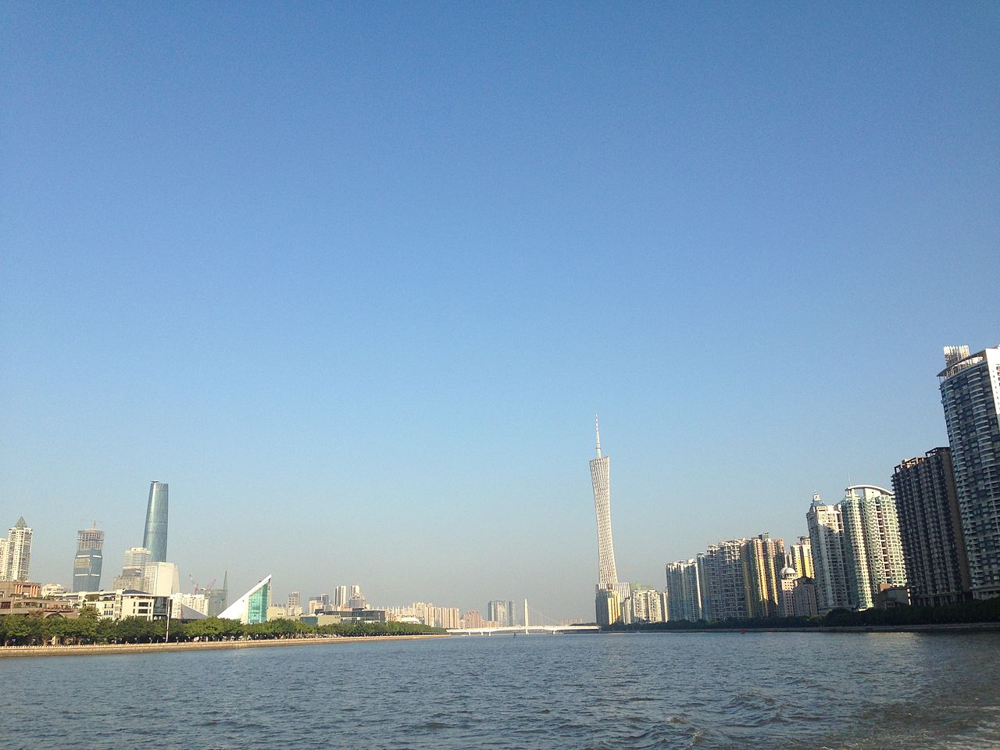
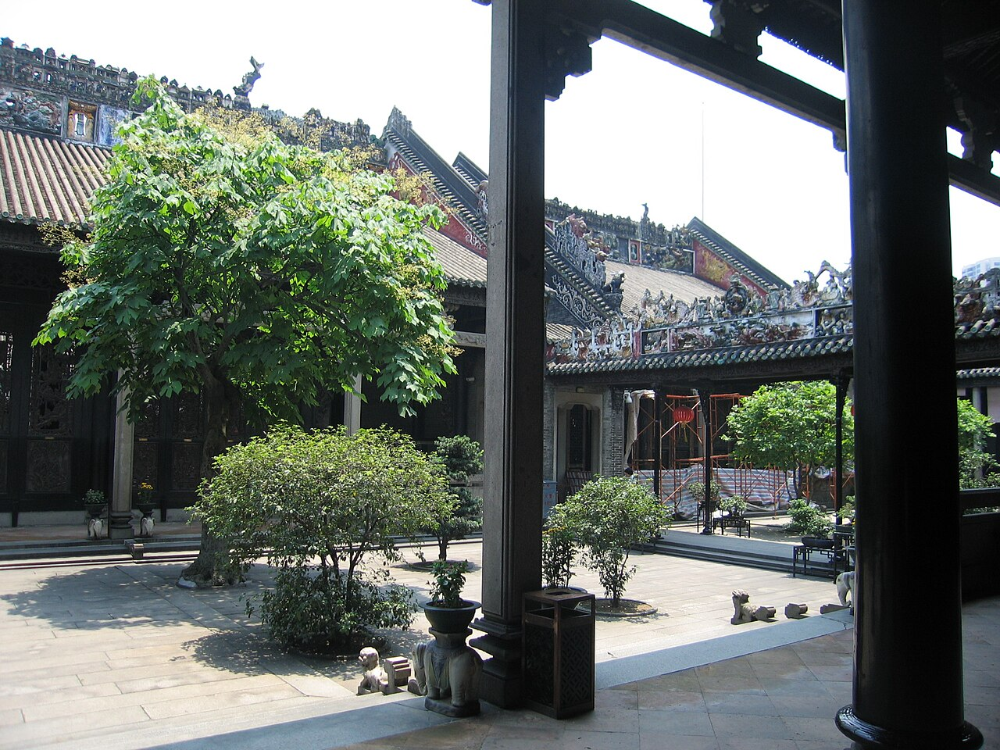
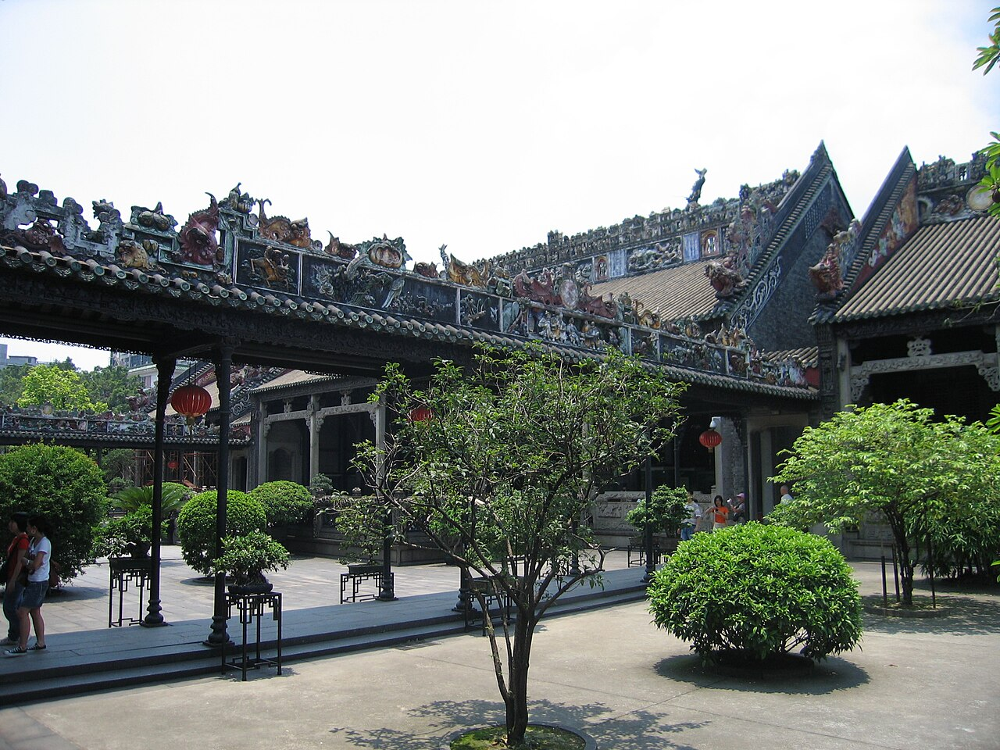
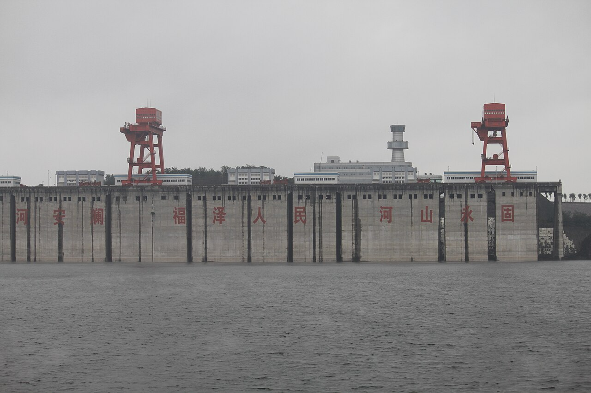
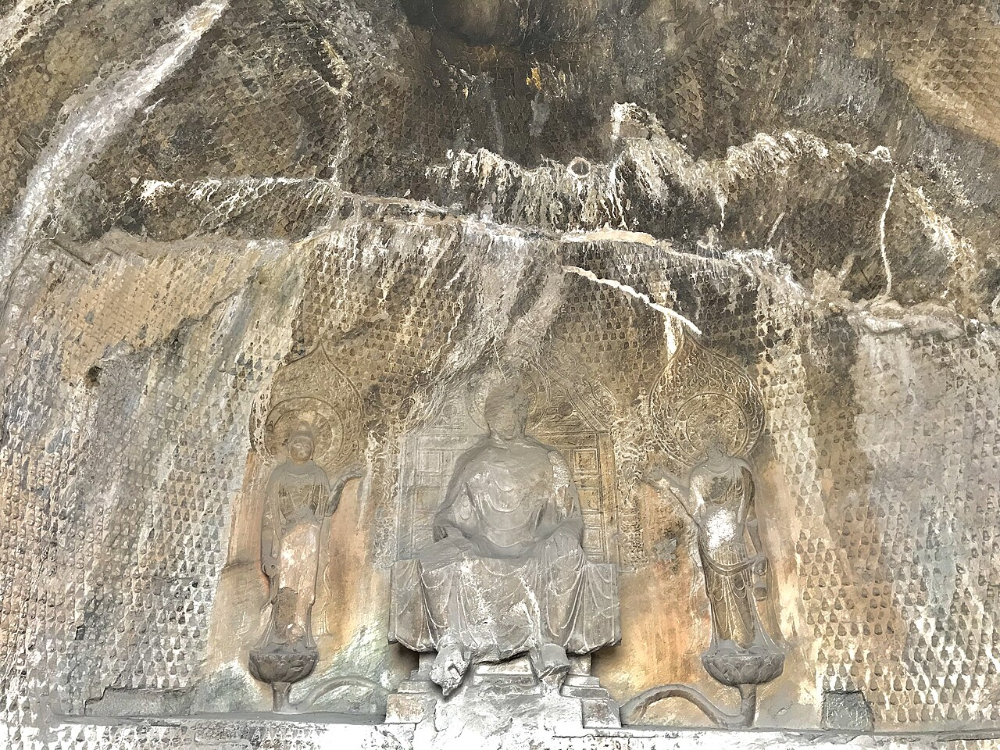
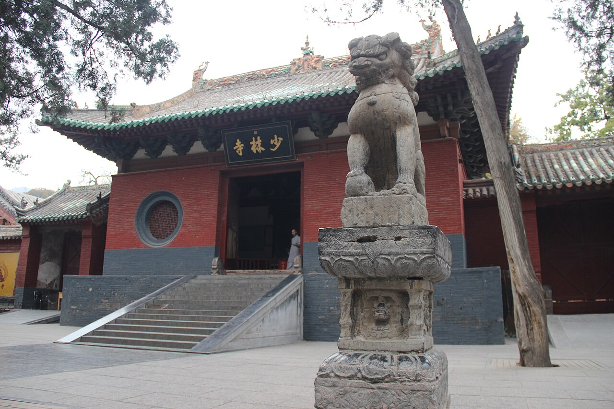
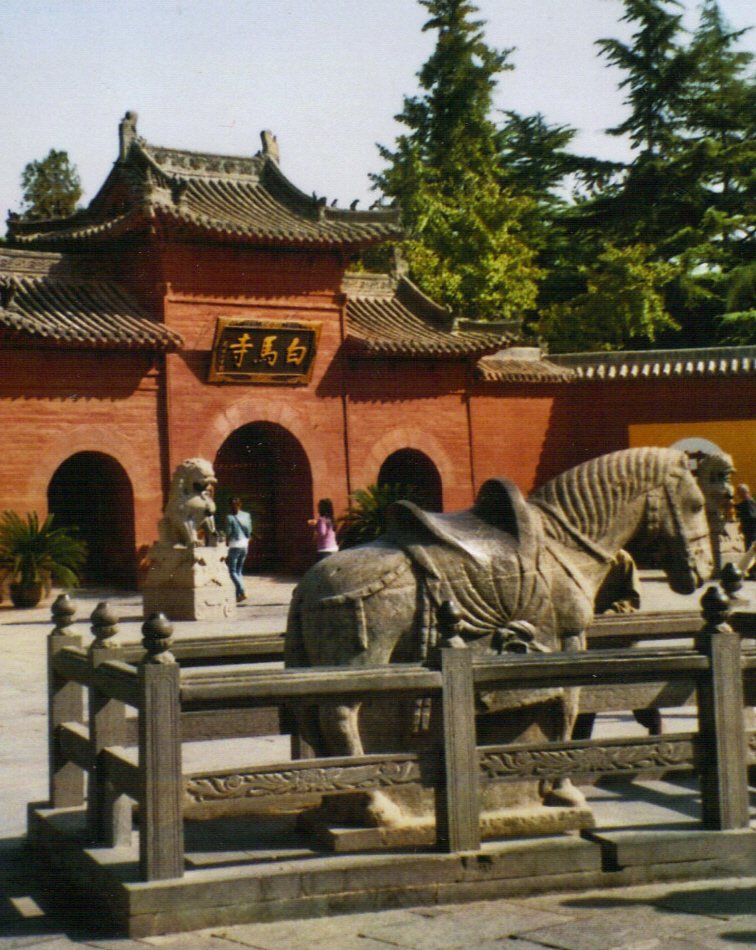
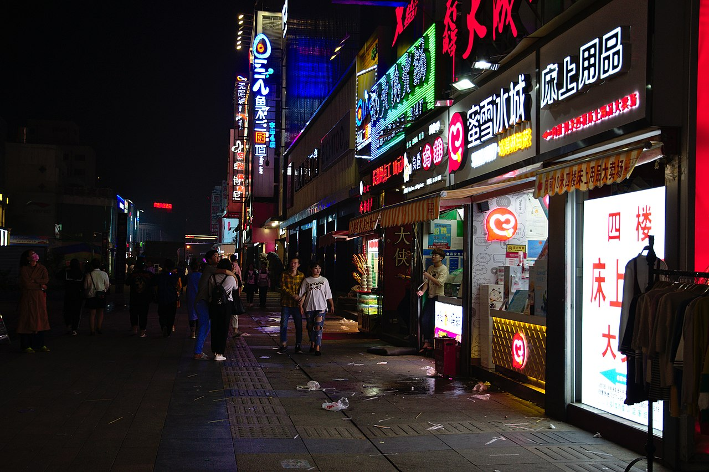
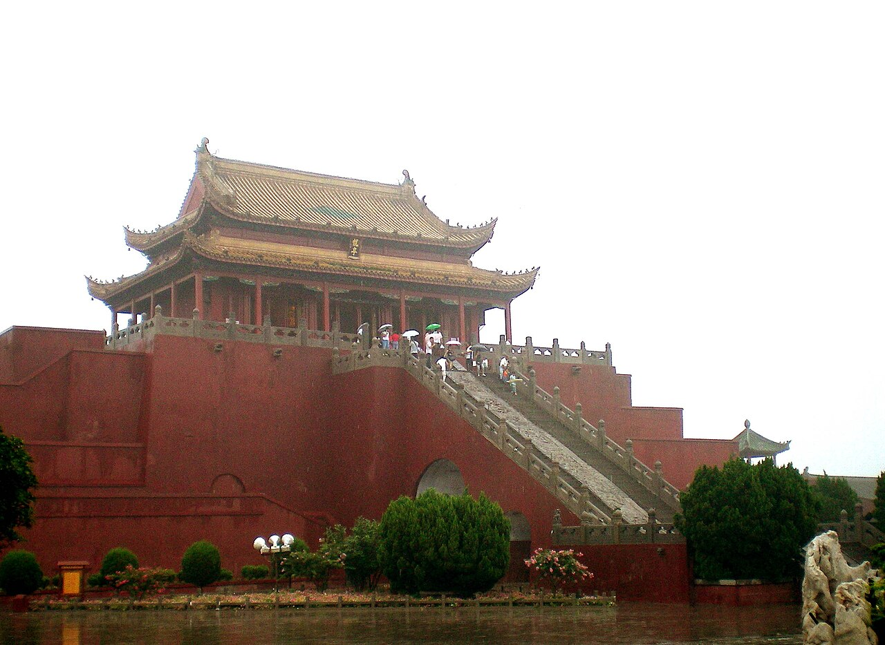

新来的找组织，老来的带带路。先认识人，再慢慢把事儿聊开。
我们的定位
在广州混得再远，也能找到一口乡音。
聚餐、茶话、徒步、创业交流，正事能谈，玩笑也能接住。
找工作、找客户、找场地、找同乡，能帮就搭把手。
河南特色
河南味儿不只在碗里，也在做人做事里。
厚重与开阔
出门在外，心里有根。黄河边长出来的劲儿，到了广州照样顶事。
自强与担当
不装腔，不怕事，遇到难处先稳住，能扛就扛。
烟火与团圆
胡辣汤、烩面、蒸面条，一上桌，距离就近了。
文化与传承
洛阳、开封、郑州、安阳，带来的不只是口音，还有见识和底气。
乡情历史
从中原到岭南，河南人在广州把日子过出声响。
广州也有“河南”一说
广州本地旧称里的“河南”，常指珠江以南的海珠一带；本网站所说的河南老乡，则指来自河南省、在广州生活发展的群体。
南下广州，寻找机会
随着珠三角制造业、商贸业和服务业快速发展，许多河南人来到广州就业创业，在批发市场、餐饮、物流、文化传媒、建筑、教育等领域扎根。
从打拼者到建设者
越来越多河南老乡在广州成家立业，也开始以商会、同乡会、公益组织和线上社群的方式互相照应，把个人奋斗连成社区力量。
从认识一个人，到链接一座城
新一代河南人在广州不只找工作，也做品牌、搭社群、办活动。乡情不是口号，是遇事有人应、吃饭有人喊。
在广州的河南人
他们来到广州，也把河南人的实在、韧劲和热乎劲带到广州。
早期足迹
广州一直是中国南方重要的商贸城市。许多河南人顺着改革开放后的城市机会南下，在市场、工厂、档口、物流、餐饮和工程项目中站稳脚跟。最初是一张车票、一个行李包、一位熟人介绍，后来变成家庭落脚、事业扩展、朋友相帮。
行业聚合
在广州，河南老乡分布在批发贸易、直播电商、餐饮供应链、建筑装饰、教育培训、文化传媒、汽车服务、服装皮具、美业健康等领域。大家靠勤奋起步，也靠口碑建立长期合作。
乡情互助
老乡会的意义，是让初来广州的人少一点陌生，让已经扎根的人多一点连接。一次饭局、一次资源分享、一场节日聚会，都可能成为事业合作、生活支持和城市归属感的开始。
在广州的河南人 · 照片
老乡面孔、羊城地标、中原文脉，放在一起就有故事。











活动计划
老乡聚起来，广州就没那么大。
每月第二个周六
河南老乡茶话会
新朋友先认个脸，老朋友顺手搭个桥。
端午 / 中秋 / 春节前
节日联谊活动
包饺子、吃家乡菜、聊近况，热闹但不吵，舒服最重要。
不定期
创业与就业互助
岗位、项目、门店、客户，有靠谱信息就流动起来。
季度公益
老乡公益行动
有事一起顶一下，能力大小都算数。
加入我们
想来就留个信儿，下次喊你。
先把名字留下，等有局、有活动、有资源对接，方便第一时间联系。
社群主理
人在广州，局不能散。
老乡之间的熟络，不靠喊口号，靠一顿饭、一杯茶、一次见面和一次靠谱的帮忙。